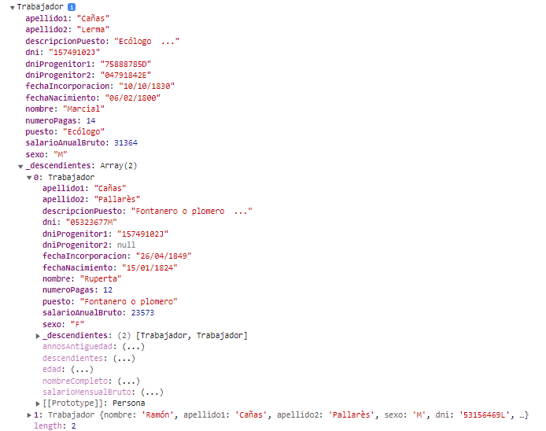

Dentro del directorio './ejercicio/9/' encontrarás varios archivos, un 'index.html',
'persona.model.js', 'trabajador.model.js' y un 'solucion.js'.
Copia la clase Persona y Trabajador que tienes implementadas en el ejercicio anterior en los archivos correspondientes a este ejercicio.
- familiaApiCall.js: en el index.html se importa este archivo que contiene una función que te devolverá un Json con los datos de un árbol genealógico.
La función "getFamiliaEjemplo()" que está dentro de familiaApiCall.js, te devolverá un Json con los datos estructurados de una familia. Ten en cuenta que El Json no devuelve objetos, sino los atributos que representan a la clase Trabajador.
El objetivo de este apartado es que transformes el JSON plano en objectos de tipo Trabajador. Tienes libertad para implementar la solución acorde a tu nivel y conocimientos, aun así te damos dos sugerencias:
La primera opción (más compleja):
- Deberás modificar el constructor de la clase Trabajador y Persona para que tenga en cuenta si no lo hace ya que cuando crees un objeto de tipo Trabajador, si el campo descendientes tiene contenido, debe a su vez crear los objeto Trabajadores o personas correspondiente.
- Una vez tengas listas las clases, podrás crear un Objeto de tipo Trabajador con los datos que obtienes al invocar la función "getFamiliaEjemplo()". Esta solución evitará que tengas que recorrer el árbol en el archivo solucion.js, simplemente creará un nuevo Trabajador y esta clase se encargará de crear tantos trabajadores como descendientes tenga.
La segunda opción: recorre el árbol devuelto por la función y por cada elemento y sus descendientes crea un Objeto de tipo Trabajador.
Una vez implementada tu soluicón, deberás mostrar por consola el trabajador que has creado, tal y como aparece en la imagen.

Una vez implementado el apartado 1, deberás crear una serie de funciones* con la que obtener la siguiente información y muéstrala en el recuadro de la solución:
- ¿Cuántos "Marcial Cañas" ha habido en la familia?
- ¿Cuántos familiares se han apellidado "Cañas Cañas"?
- Muestra los familiares que tuvieron como profesión "Ecólogo", mostrando nombre completo, fecha nacimiento y el salario mensual bruto.
- ¿Cuántas personas de la familia tendrían ahora 80 años o menos?
- ¿Cuántas personas de la familia tendrían ahora 25 años o menos?
- ¿Cuántas generaciones tiene la rama más larga del árbol genealógico? (la primera generación son la descendencia del primero nodo). Para hacer pruebas en este apartado puedes invocar la función "getFamiliaEjemplo6Generaciones()" del archivo "familiaApiCall.js", el cual te devuelve un árbol geneálogico cuya rama más larga tiene 6 generaciones.
* Es importante que refactorices el código para hacer funciones limpias y claras, intentando evitar repetir código.